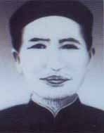
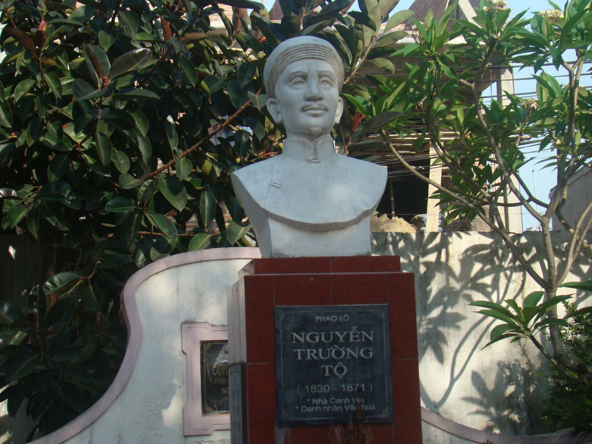

Năm 2011, Đức giám mục Vinh - Nguyễn Thái Hợp có thiện ý muốn tổ chức kỷ niệm 140 năm (1871-2011) ngày qua đời của nhà yêu nước Nguyễn Trường Tộ ngay tại quê hương và phần mộ ở Xã Đoài, huyện Nghi Lộc, thành phố Vinh nay. Nhiều học giả đã tán thành và gửi bài tham luận. Rất tiếc năm 201 là năm có nhiều vấn đề nhạy cảm mà vấn đề Nguyễn Trường Tộ nằm trong số đó! Nên không có gì để kỷ niệm Nguyễn Trường Tộ cho đáng với một nhân vật lịch sử lớn như ông.
Tôi cũng được vinh dự đóng góp một báo cáo nhỏ. Đó là bài Giả như kế hoạch đánh úp Gia Định của Nguyễn Trường Tộ được thi hành! [1]. Tất nhiên, không có tọa đàm hay nghi thức kỷ niệm thì bài này không được ra mắt quý bạn đọc.

Nguyễn Trường Tộ
Sau ngày 30.4.1975, đất nước hoàn toàn thống nhất, giới Công giáo thành phố Hồ Chí Minh thường biểu lộ lòng mến quê hương với bài ca rất phổ biến Trước khi là Công giáo tôi là người Việt Nam. Công giáo hay không, đều là người Việt Nam, đều có nghĩa vụ và quyền lợi của một công dân trung thành với tổ quốc dân tộc.
Thiển nghĩ Nguyễn Trường Tộ là nhân vật Công giáo nêu tấm gương yêu nước tuyệt vời ấy ngay từ thời “trung quân ái quốc”, trong một giai đoạn lịch sử cực kỳ phức tạp và đen tối. Ông đã điều trần Tự do tôn giáo [2] là quyền thiêng liêng, nhưng nhiệm vụ phụng sự đất nước cũng là bất khả kháng. Ngay từ khi Công giáo truyền vào Việt Nam hơn 400 năm trước, một sáng kiến thần học đã lập thuyết Tam phụ tức phải tôn kính ba cha: Trời, (thượng phụ). Vua (trung phụ) và đấng sinh thành (hạ phụ). Như vậy, càng kính Chúa và hiếu hạnh thì càng phải “trung quân ái quốc”. Lý thuyết đâu có trái nghịch với thực tế! Trong một điều trần, Nguyễn Trường Tộ giải thích về thuyết Tam phụ rất minh bạch và hấp dẫn, trước khi sáng tác điều trần Ngôi vua là quý, chức quan là trọng [3]. Tuy nhiên, với tư cách một thường dân tha thiết tới vận mệnh dân tộc, Nguyễn Trường Tộ đã đệ đạt lên triều đình Tự Đức những bài học lịch sử và thời sự quốc tế nhằm canh tân xứ sở và cứu nguy dân tộc.
Nhân dịp kỷ niệm này, tôi đã mạo muội viết một số bài trên tuần báo Công giáo và Dân tộc ngõ hầu giới thiệu Nguyễn Trường Tộ như một tấm gương ái quốc chói sáng cho tín hữu chúng tôi. Từ xưa đến nay đã có nhiều học giả hay tác giả viết về Nguyễn Trường Tộ. Tôi đã học hỏi được nhiều, song tôi không thể trích dẫn hết các điều trần và những nhận xét sâu sắc của quý vị. Tôi chỉ dám lựa chọn một góc nhỏ: Nguyễn Trường Tộ với triều đình Tự Đức (1861-1871) và đặc biệt sử dụng tư liệu tổng hợp về Nguyễn Trường Tộ của Trương Bá Cần [4] cùng bộ chính sử Đại Nam thực lục chính biên [5].

Chúng ta đều biết khoảng giữa thế kỷ XIX, sau khi thôn tính được nhiều thuộc địa trên thế giới, đế quốc Pháp khởi công xâm chiếm nước ta và các tiểu quốc thuộc quyền bảo hộ Việt Nam ở Đông Dương, với lý do Việt Nam không tôn trọng tự do tôn giáo! Ngày 19.6.1988, Tòa thánh phong hiển thánh cho 117 tín hữu, mà dưới ba triều Minh Mạng - Thiệu Trị - Tự Đức có tới 111 vị (58+3+50) tuẫn tử trong thời gian từ 1833 đến 1862. Đó là những năm Pháp đem tàu chiến và quân lực đến uy hiếp và đánh phá Việt Nam. Tín hữu hy sinh thực sự vì trung thành với đức tin, nhưng chính quyền cấm đạo và tàn sát tín hữu có lẽ vì lý do chính trị hơn tín ngưỡng. Tôi đã cố giải thích khúc mắc này qua tập sách nhỏ Tiểu sử Cha Khâm - Đặng Đức Tuấn [6].
Dẫu chỉ lựa chọn nghiên cứu vấn đề ở một góc hẹp và đa phần là trích dẫn các tư liệu chính xác, nhưng chúng tôi vẫn thành thực xin quý độc giả nhắc nhở cho biết những gì còn sai nhầm hay thiếu sót. Xin trân trọng cám ơn.
Cuối thu năm 2012
Nguyễn Đình Đầu
Chú thích:
[1] Trương Bá Cần, Nguyễn Trường Tộ - con người và di thảo. NXB TP.HCM. 1988. Trang 325-332.
[2] Trương Bá Cần, Nguyễn Trường Tộ..., sđd, trang 115-119.
[3] Như trên, trang 174-180.
[4] Trương Bá Cần, sđd.
[5] Quốc triều sử quán, Đại Nam thực lục chính biên. Tổ phiên dịch Viện Sử Học phiên dịch. NXB Khoa Học Xã Hội. Các tập XXIX, XXX, XXXI. Hà Nội, 1974.
[6] Nguyễn Đình Đầu, Tiểu sử Cha Khâm Đặng Đức Tuấn - Thông ngôn sứ bộ Phan Thanh Giản năm 1862. NXB Tôn Giáo 2012.
Danh nhân Nguyễn Trường Tộ qua đời ngày 22.11.1871, đến nay đã 142 năm. Lịch sử đã ghi nhận ông là một sĩ phu bày mưu tính kế giải phóng dân tộc từ buổi đầu Pháp xâm chiếm nước ta và đạo đạt phương lược canh tân xứ sở trước cả thời Nhật với Minh Trị Thiên Hoàng.
Nguyễn Trường Tộ sinh năm 1830, con cụ lang Nguyễn Quốc Thủ, tại thôn Xã Đoài nay thuộc huyện Nghi Lộc, tỉnh Nghệ An. Xã Đoài là thôn theo đạo Công giáo từ lâu đời. Năm 1846, giáo phận Vinh (nguyên gọi là Tây Đàng Ngoài) được thành lập với Giám mục tiên khởi là Gauthier Hậu. Ngài liền lấy Xã Đoài làm trụ sở. Khi ấy Nguyễn Trường Tộ 16 tuổi đã thông thạo nho học với tứ thư ngũ kinh, với sử sách Đông phương và đất nước, lại được mệnh danh là “trạng Tộ”. Ông mở trường dạy học tại gia. Đức cha Hậu biết ông Tộ là người tài đức, liền mời ông làm thầy dạy các chủng sinh của giáo phận. Đồng thời ông Tộ cũng nhờ cậy Đức cha Hậu, học thêm tiếng Pháp và nghiên cứu nền văn minh Tây phương cùng lịch sử đổi thay của các quốc gia trên thế giới, kể cả sự tiến bộ về khoa học và kỹ thuật.
Tình hình đạo đời đương thời hầu như thúc bách Nguyễn Trường Tộ trau dồi thêm nhiều kiến thức: Năm 1833 Minh Mạng ban hành chỉ dụ cấm đạo khắc nghiệt sau vụ nổi loạn Lê Văn Khôi mà khi tái chiếm thành Gia Định bắt được cố Marchand Du cùng một số ít giáo dân ở trong. Dưới thời Thiệu Trị nối ngôi từ 1841 đến 1847, việc cấm đạo được nới nhẹ hơn. Tuy nhiên, từ khi Tự Đức lên ngôi năm 1848, nhiều nước Tây phương kể cả Hoa Kỳ, nhất là Pháp, đến xin mở cửa giao thương. Pháp xin thêm trả tự do cho các vị thừa sai Tây phương và cho truyền giáo. Đôi lần Pháp đem cả chiến thuyền đến thị oai. Tự Đức thấy đó là mưu đồ đế quốc xâm chiếm nước ta, nên càng bế quan tỏa cảng và ráo riết cấm đạo.
Năm 1858, Pháp kết hợp với Tây Ban Nha - nước có nhiều giáo sĩ ở giáo phận Đông Đàng Ngoài (Hải Phòng, Bắc Ninh, Thái Bình...) - đem chiến thuyền đến đánh phá Cửa Hàn (Đà Nẵng) và tìm đường ra chiếm kinh đô Huế. Tự Đức liền ra chỉ dụ trảm quyết hết giáo sĩ kể cả bản quốc và phân sáp toàn thể giáo dân. Đức cha Hậu (Gauthier) - giám mục đại diện Tông tòa coi sóc giáo phận Vinh và Nguyễn Trường Tộ đành phải sang Hồng Kông lánh nạn. Đây cũng là dịp Nguyễn Trường Tộ xuất dương để mắt thấy tai nghe những hiện tượng lớn lao làm thay đổi tình hình thế giới. Ông đọc thêm “tân thư” mà Trung Quốc dịch thuật từ sách tiến bộ Tây phương. Ông được tiếp xúc và đàm đạo sâu sắc với giới thức giả Đông phương và Tây phương kể cả mục sư Tin Lành tân tiến. Ông kiểm nghiệm giữa kiến thức đã thâu thái với thực tế diễn biến đương thời. Tất nhiên ông đặc biệt chú ý đến những gì liên quan đến đất nước và con người Việt Nam. Có lẽ ông cũng có dịp tham quan Tân Gia Ba và Pênăng. Hai nơi này đều là thuộc địa của Anh giống như Hương Cảng và là những trung tâm giao thương quốc tế bắt đầu phát triển theo mô hình tư bản Tây phương. Ông cùng Giám mục Hậu trở về Sài Gòn năm 1861.
Chúng ta biết rằng năm 1858 Pháp và Tây Ban Nha đánh phá Cửa Hàn, nhưng thất bại, nên năm sau tức 1859 kéo quân vào Nam xâm chiếm thủ phủ Gia Định (Sài Gòn). Suốt hai năm từ đầu năm 1859 đến đầu năm 1861, Pháp chịu nhiều khốn đốn mới chiếm đóng được một phần nhỏ Sài Gòn vì phải rút quân sang Trung Hoa chinh chiến. Khi chiến tranh giữa Trung Hoa và liên quân Anh - Pháp chấm dứt, Đô đốc Charner đem một đội quân hùng hậu tới đánh phá đại đồn Chí Hòa do thống tướng Nguyễn Tri Phương chỉ huy, rồi mở rộng thêm nhiều khu chiếm đóng. Charner đã mời Giám mục Hậu về Sài Gòn, Nguyễn Trường Tộ cũng về theo. Charner nhận ông Tộ làm thông dịch viên. Ông làm việc này với thâm ý lèo lái sự việc cho có lợi về phía Việt Nam trong cuộc thương nghị hòa bình. Nhưng ngày 16.12.1861, Bonard hung hãn đánh chiếm Biên Hòa; ngày 7.1.1862 đánh chiếm Bà Rịa. Ông Tộ không mong gì ở hòa cuộc nữa và thôi làm từ dịch cho Pháp. Ông vẫn ở Sài Gòn, ngấm ngầm liên lạc với quan chức đang có trách nhiệm giải quyết vấn đề hòa hay chiến tại đây, nhằm mục đích thông tin xác thực để giải quyết tình huống có lợi cho Việt Nam. Nhân tiện ông giúp xây cất tu viện Dòng thánh Phaolô (số 4 Tôn Đức Thắng, quận 1, thành phố Hồ Chí Minh nay), bắt đầu tháng 9.1862 và hoàn tất ngày 18.7.1864. Giáo sĩ Le Mée kể lại như sau:
“Đức Giám mục Gauthier và Linh mục Croc đã đem theo một nho sĩ Đàng Ngoài, tên là Lân (tức Nguyễn Trường Tộ), với trí thông minh hiếm có. Được gợi ý và được thúc đẩy bởi sự nhiệt tình và tận tụy của giám mục mình, nho sĩ Đàng Ngoài này, vì tình yêu Thiên Chúa, đã nhận đứng ra đốc suất công việc. Trước kia ông có ở Hồng Kông ít lâu và trong thời gian ngắn ngủi tại thuộc địa này của người Anh, ông đã thấy được cách thức và thể loại kiến trúc của châu Âu. Thời đó ở Sài Gòn chưa có một công trình nào làm kiểu mẫu. Với đề án của tu viện và nhà nguyện do Nữ tu Benjamin (Bề trên) cung cấp, ông ta đã phác họa được một họa đồ phối cảnh chung và thực hiện công trình nhờ sự cộng tác của các công nhân người Việt Nam. Chính ông đã phải vẽ sơ đồ của tháp chuông và tự mình trông nom công việc một cách rất cẩn thận; chính ông đã hoàn thành nhiều phần khác của công trình. Mỗi ngày người ta thấy ông có mặt ở công trường và để ý tới từng chi tiết. Phải thú nhận là nếu không có ông thì không thể thực hiện được một công trình như vậy vào một thời điểm mà ở Sài Gòn chưa có thợ cũng như chưa có nhà thầu” [1].
Suốt 11 năm, từ đầu năm 1861 khi ở Hồng Kông về Sài Gòn đến cuối năm 1871 lúc qua đời, Nguyễn Trường Tộ đã đệ đạt nhiều văn thư và điều trần tới các thượng quan lo nhiệm vụ chiến hay hòa với Pháp, tới Lục bộ triều đình cùng cả Cơ mật viện. Tiếc thay nhiều văn bản đã mất mát. Nay chỉ còn 58 di thảo hay điều trần [2]. Chúng tôi tạm chia ra hai phần:
1. Thời gian chuẩn bị (1861 - 1865) chỉ có 7 di thảo.
2. Thời gian hợp tác (1866 - 1871) có 51 di thảo.
Chú thích:
[1] Trương Bá Cần, Nguyễn Trường Tộ - con người và di thảo. NXB TP.HCM, 1988. Trang 29.
[2] Trương Bá Cần, sđd, trang 511-512.